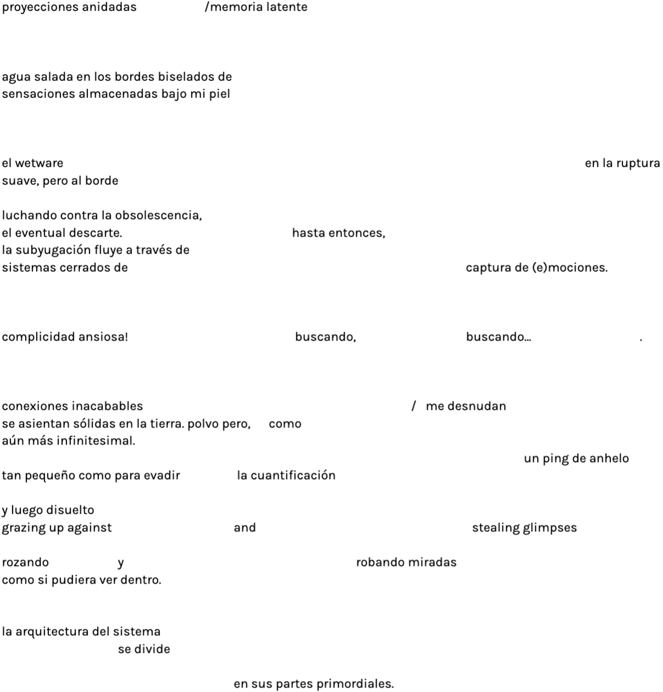
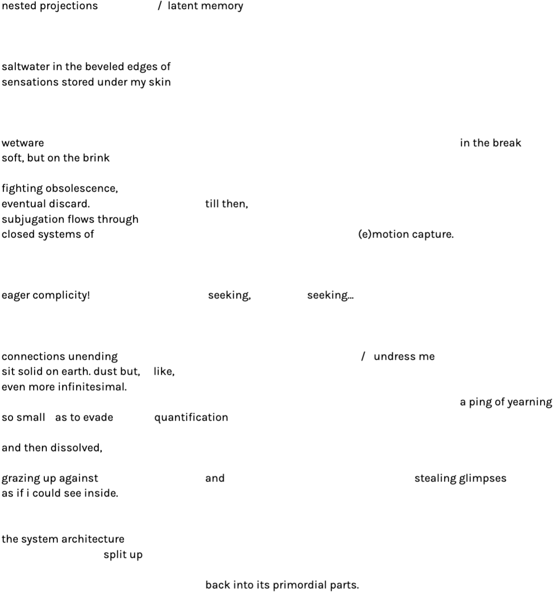

Physical computing, 2021
Adina Glickstein

Adina Glickstein (199*, Estados Unidos)
Escritora, editora y artista que trabaja con texto y medios del tiempo. Actualmente reside en Berlín, donde es editora digital de Spike Art Magazine. Fue miembro del estudio colaborativo Soft Surplus en Nueva York, y participó en School for Poetic Computation (una propuesta académica y pedagógica dirigida por artistas), como estudiante y asistente de enseñanza.
La práctica interdisciplinar y de investigación de Adina, se ocupa del impacto material del llamado trabajo "inmaterial", desenterrando las tragedias sociales y ecológicas ocluidas por metáforas populares como "la nube". Esta línea de investigación también ha alimentado su práctica de escritura crítica, en la que examina cómo el arte y la música pueden suscitar una conciencia encarnada y conjurar nuevos estados de percepción que sacan a la luz la carga del capitalismo computacional. Al tener una práctica de escritura que pasa por distintos medios, desde la crítica hasta el código, el trabajo de Adina busca enmarcar críticamente la tecnología a través de las cuestiones sociales de un mundo profundamente desigual, luchando contra la capacidad de las nuevas innovaciones para reforzar las viejas jerarquías y tratando de imaginar alternativas más justas y equitativas.
*Imágenes en el fondo de pantalla de Adina del colectivo de artistas Keiken

Adina Glickstein (199*, United States)
Writer, editor, and artist working between text and time-based media. She is currently based in Berlin, where she is the Digital Editor at Spike Art Magazine. She was previously a member of the collaborative studio Soft Surplus in New York and participated in the artist-led School for Poetic Computation as both a student and teaching assistant.
Adina’s interdisciplinary, research-led practice is concerned with the material impact of so-called “immaterial” labor, unearthing the social and ecological tragedies occluded by popular metaphors like “the Cloud.” This line of inquiry has also fed into her critical writing practice, where she examines how art and music can elicit embodied awareness and conjure new states of perception that bring the burden of computational capitalism into view. Writing across media from criticism to code, Adina’s work seeks to critically frame technology through the social questions of a deeply unequal world, grappling with new innovations’ capacity to reinforce old hierarchies and aiming to imagine more just and equitable alternatives.
* Images in Adina’s desktop background from the artist collective keiken
Folded landscape (El Páramo), 2016,
Andrés Baron.
La fotografía doblada de esta película se llama El Páramo, y fue tomada en el 2013. La imagen representa un paisaje deshabitado, con flora autóctona colombiana a pocos kilómetros de Bogotá. En esta pieza de vídeo, un cuerpo interactúa físicamente con la idea de paisaje y reutiliza esta imagen que da la sensación de un pasado remoto para el artista.
Andrés Barón (199*, Colombia)
Vive y trabaja en París. A través de una práctica que entrelaza cine, vídeo y fotografía, su enfoque establece una relación con la imagen transformada por las pantallas y las redes, jugando con los espacios de representación. Recibió su MFA en la École nationale supérieure des Arts Décoratifs de París. Como artista y cineasta, su obra se ha presentado en varios lugares y exposiciones, como el Festival Internacional de Cine de Rotterdam (Países Bajos), el Festival Internacional de Cine de Edimburgo (Reino Unido), Anthology Films Archives, Nueva York (EE.UU.), Images Festival, Toronto (CA), la Bienal Internacional de Arte Joven de Moscú (RU), EKKM Tallin (EE), LA Film Forum, Los Ángeles (EE.UU.), Le Bal, París (FR), entre otros. Fue preseleccionado para el Prix des Amis du Palais de Tokyo en 2018.
The folded photograph in this film is called El Páramo, taken in 2013. The image represents an uninhabited landscape with native flora a few kilometers from Bogotá in Colombia. In this video piece, a body physically interacts with the idea of landscape and re-uses this image that felt like a remote past for the artist.
Andrés Barón (199*, Colombia)
lives and works in Paris. Through a practice that involves film, video, and photography, his approach establishes a relationship with the image transformed by screens and networks, playing with representation spaces. He received his MFA from l’École nationale supérieure des Arts Décoratifs in Paris. As an artist and filmmaker, his work has been presented in various venues and exhibitions, including the International Film Festival Rotterdam (NL), the Edinburgh International Film Festival Edinburgh (UK), Anthology Films Archives, New York (USA), Images Festival, Toronto (CA), the Moscow International Biennale of Young Art, Moscow (RU), EKKM Tallin (EE), LA Film Forum, Los Angeles (USA), Le Bal, Paris (FR) among others. He was shortlisted for the Prix des Amis du Palais de Tokyo in 2018.
UMBRAL VIENE DE SOMBRA (Pestbosjes), 2020,
Antonio Bermudez.
La obra/espacio3D/experiencia de A.B. nos invita a habitar ese límite, la línea entre lo conocido y lo desconocido, ese espacio liminal donde habitan nuestros miedos más salvajes y nuestros mitos más antiguos. Lobos, tigres, pumas, criaturas míticas y fuerzas mágicas habitan este oscuro “umbral”.
Pero la naturaleza salvaje se está convirtiendo hoy en día en una idea abstracta. En algunas partes del mundo, como en los Países Bajos, ya no hay lugares silvestres, libres, desiertos o extremos. No hay bosques primitivos ni altas montañas. El límite entre los territorios salvajes y los paisajes creados por el hombre ya no existe. No hay miedo ni magia en torno a la idea de la naturaleza. El territorio se traza como una concatenación de jardines cerrados sin anverso.
Los Pestbosjes, que en neerlandés significa “arboledas de pestes” o “bosques de pestes”, siguen siendo elementos del paisaje histórico en algunas partes de los Países Bajos. Tienen el aspecto de pequeñas arboledas cerradas por una zanja; son similares a los bosques de conveniencia, pero con una función diferente e inusual. Estos pequeños terrenos se delimitaron entre los siglos XVI y XIX para enterrar y aislar el ganado perdido a causa de enfermedades infecciosas y epidemias de peste. Estos lugares siguen existiendo por el temor a enfermedades como el ántrax, que puede seguir siendo contagioso durante más de un siglo. Estos bosques cerrados originados por la muerte y la enfermedad son hoy en día islas de diversidad y tienen un significado casi místico. El paisaje de esta parte del mundo hace tiempo que se ha perdido. Estos Pestbosjes incorporan todo el miedo y la vitalidad que encarnaban los desaparecidos espacios naturales.
Estos lugares cerrados están desiertos, desprovistos de seres humanos. Pero son al mismo tiempo jardines y lugares salvajes; el más pequeño fragmento de tierra y el mundo entero. Estas parcelas sólo se pueden inspeccionar desde la distancia. Los espacios naturales se han cosificado y nuestra relación con ellos se ha convertido en un fetichismo disfrazado.
Antonio Bermúdez (1991, Colombia)
Es arquitecto e investigador visual, actualmente trabaja en temas relacionados con el paisaje y el territorio.
Su práctica dual entrelaza el territorio y sus diferentes significados trabajando en la intersección de cultura y tierra. Su trabajo aborda temas como la orientación, la geopolítica, la toponimia, el colonialismo, el exotismo y el imaginario de las naciones.
Como investigador visual, tiende a trabajar a partir de metodologías utilizadas en la arquitectura y los estudios espaciales, y en este sentido, se inclina por vincular todas las temáticas de su investigación a los lugares físicos existentes. La hipótesis no demostrada, basada en el cruce de mapas, fotografías, archivos y colecciones, es su principal aparato discursivo. Pasa de la observación a la especulación, ya que para él la forma es una fuente de significado más inagotable que la idea.
Does the wild begin where the garden ends? Or does the garden end where the wild begins?
The work/3d space/experience by A.B. invites us to inhabit this limit, the line between the known and the unknown, this liminal space where our wildest fears and oldest myths dwell. Wolfs, tigers, pumas, mythical creatures, and magical forces inhabit this dark threshold (“el umbral”).
But wilderness is becoming today just an abstract idea. In some parts of the world, like in The Netherlands, there are no uncontrolled, free, deserted, or extreme places anymore. There are no primeval forests nor high mountains. The limit between wild territories and man-made landscapes does not exist anymore. There is no fear nor magic around the idea of nature. Territory is traced as a concatenation of enclosed gardens without obverse.
Pestbosjes, Dutch for pest-groves or pest-woods, are still existing elements of the historical landscape in some parts of The Netherlands. They look like small groves enclosed by a ditch; they are similar to convenience woods but with a different and unusual function. These small pieces of land were marked off between the 16th and 19th centuries to bury and isolate cattle lost because of infectious diseases and plague epidemics. These places still exist because of the apprehension of diseases like anthrax, which can remain contagious for more than one century. These enclosed forests originated by death and illness are nowadays islands of diversity and carry an almost mystical meaning. The landscape in this part of the world has long since been lost. These Pestbosjes incorporate all the fear and vitality that the disappeared wilderness used to embody.
These enclosed places are deserted, devoided of humans. They are at the same time gardens and feral places, the smallest fragment of land and the entire world. These parcelles can only be inspected from a distance. Wilderness has been objectified and our relation to it became fetishism in disguise.
Antonio Bermúdez (1991, Colombia)
Is an architect and a visual researcher, at present working on matters related to landscape and territory.
His dual practice intertwines territory and its different meanings working within the intersection of culture and land. His work deals with topics such as orientation, geopolitics, toponymy, colonialism, exoticism, and the imaginary of nations.
As a visual researcher, he tends to work from methodologies used in architecture and spatial studies. In that sense, he is inclined to link his research to existent physical places. His central discursive apparatus is the unsubstantiated hypothesis based on the crossing of maps, photographs, archives, and collections.
He goes from observation to speculation, as for him, the form is one more inexhaustible source of meaning than the idea.
Housing Fair, 2018,
Jaakko Pietiläinen
La feria de la vivienda (housing fair) es un evento anual que se celebra en diferentes partes de Finlandia. Estas ferias se instalan en diferentes áreas donde se construyen y decoran casas reales para que el público las visite. Después de cada feria, la gente se muda y empieza a vivir en la zona, pero la feria de la vivienda propuesta por Jaakko Pietiläinen es una experiencia particular. En este vídeo de tres canales generado por computadora, nos encontramos con una típica zona residencial con casas comunes o con jardines, pero no es lo que parece. Los nuevos residentes se han evaporado, pero todas las casas, los robots podadores, y toda la infraestructura, continúan como si nada.
Jaakko Pietiläinen (1986, Finlandia)
A Pietiläinen le interesan las infraestructuras tecnológicas de las culturas contemporáneas, y cómo estas remodelan sutilmente realidades y crean distorsiones estéticas. Es un artista basado en Helsinki que trabaja de forma interdisciplinar entre las artes visuales, el performance, la danza y el teatro contemporáneo, utilizando diferentes materiales y medios, desde el vídeo hasta las intervenciones espaciales in situ. Las obras de Pietiläinen suelen ser específicas a un lugar o una situación, y operan desde la interacción entre los hechos (o lo real) y las narrativas de ficción.
Housing Fair is an annual event held in varying locations around Finland. These fairs are set up in different areas where actual houses are built and decorated for the audience to visit. After each fair, people will move in and start living in the area, but Jaakko Pietiläinen's Housing Fair is a rather different experience. In this computer-generated three-channel video, we are faced with a typical residential area with common-or-garden houses, but not all is what it seems. The new residents have evaporated, but all the houses and robot lawnmowers, the whole infrastructure, continue like nothing ever happened.
Jaakko Pietiläinen (1986, Finland)
Pietiläinen is interested in the technological infrastructures of contemporary cultures, how they subtly reshape realities, and how they malfunction and create novel, uncanny aesthetic distortions. He is a Helsinki-based artist working cross-disciplinarily between visual arts, performance, and contemporary dance and theatre, utilizing different materials and media, from video to spatial interventions. Pietiläinen's works are often site or situation-specific, operating in an interplay of the factual (or the real) and fictional narratives.
Me In Myself, 2016,
Karina Zen.
“Esta obra surgió de un juego al que solía jugar de niña. Buscaba destellos en el paisaje; y a veces, estos eran reflejos del sol en un pequeño grano de arena, a veces en un enorme cristal de alguna construcción.
Estos brillos aparecían cuando me alineaba con la fuente de luz y la superficie reflectante, lo que me hacía percibir la posición de mi cuerpo en el espacio. Pero también, me di cuenta, de que la percepción del resplandor no solo permite tomar conciencia de la propia presencia física en una coordenada; también oculta el objeto reflectante y su entorno, generando un distanciamiento visual del mismo.
De estos ires y venires entre la visión del objeto reflectante y su reflejo, es que llego al simbolismo personal que relaciono a este proceso e imagen. Los pensamientos me llevan al futuro o al pasado; rara vez mi atención está en el mismo lugar que ocupa mi cuerpo en ese momento. Las distracciones y los deseos me alejan de donde estoy, llevándome fácilmente a mundos imaginarios, virtuales o especulativos; y vivo gran parte del tiempo en esta red. Es como si la percepción de mí misma estuviera oculta por las distracciones que experimento sin llegar a ver lo que es real.”
Karina Zen (1968, Brasil)
Vive y trabaja en Ponte in Valtellina/Italia. Especializada en fotografía en el CFP Bauer de Milán/IT.
Desde 2008, Karina expone y mantiene una práctica que se desarrolla en diferentes lenguajes y prácticas: video, instalaciones y fotografía que le permiten hablar en términos emocionales y físicos sobre la construcción simbólica de los humanos.
"This work came from a game I used to play as a child. I would look for sparkles in the landscape; and sometimes, they reflected the sun in a small grain of sand, occasionally in an enormous glass in some construction.
These glows would appear when I would align with the light source and the reflecting surface, which made me perceive my body's position in space. And, I realized that at the same time, that the perception of the glow allows the awareness of the physical presence in space; it hides the reflective object and its surroundings, thus promoting a visual distance from it.
With this game of back and forth between the vision of the reflecting object and its reflection, I think about the symbolism that the image and process carries. Thoughts take me to the future or the past; rarely is my attention in the same place that my body is occupying at that moment.
Distractions and desires take me away from where I am, easily taking me to imaginary or virtual, or speculative worlds, and I live much of the time on this net. It is as if the perception of myself is hidden by the distractions I experience without ever seeing the real thing."
Karina Zen (1968, Brazil)
Lives and work in Ponte in Valtellina/Italy. Specialized in photography at CFP Bauer in Milan/IT.
Since 2008, Karina has been exhibiting and maintaining a practice that unfolds in different
languages: video, installations, and photography.
Sky Studies, 2014,
Kyle Seis.
Sky Studies presenta la recopilación de múltiples experimentos relacionados con luz, espacio y tiempo.
Kyle Seis explora los límites de la percepción espacial empleando una serie de accesorios ópticos y fotográficos, proponiendo una conexión entre la imagen fotográfica y el complejo acto de ver. Utilizando el cielo como tema principal de este proyecto, explora con una extensión aparentemente ilimitada que puede percibirse fácilmente como plana a pesar de su extrema dimensionalidad. El espacio, a veces, se simplifica y aplana, a veces, se enfatiza y expande. Su práctica no se preocupa por hechos científicos probados sino por la ilusión, y el asombro.
Kyle Seis (1992, Estados Unidos)
En el centro de su práctica está la fascinación por la percepción del tiempo, el espacio y la superficie, tanto en el paisaje como en el medio fotográfico. Se acerca a ambos con un sentido de curiosidad intuitiva y observación reflexiva, con el objetivo de revelar las conexiones entre la naturaleza evolutiva y expansiva del paisaje, y la naturaleza inmóvil y plana de la imagen fotográfica.
Obtuvo su licenciatura en la Universidad de Wisconsin-Milwaukee en 2014 y ha recibido una beca Mary L. Nohl para artistas individuales y una beca Mary L. Nohl Suitcase Export Fund. Su obra se ha expuesto en galerías e instituciones como el Milwaukee Art Museum (Milwaukee, WI), INOVA (Milwaukee, WI), el Museum of Wisconsin Art (West Bend, WI), The Alice Wilds (Milwaukee, WI), Osnova Gallery (Moscú, RU) Filter Photo Space (Chicago, IL), Skylab Gallery (Columbus, OH), Neon Heater Gallery (Findlay, OH) y Dateline (Denver, CO).
Sky Studies presents the collected results of numerous experiments with light, space, and time. Kyle Seis explores spatial perception's limits by employing a series of optical and photographic props to suggest a connection between the photographic image and the significantly complex act of seeing.
Using the sky as the subject of this project, he explores a seemingly limitless expanse that can easily be perceived flat despite its extreme dimensionality. Space is simplified and flattened at times and emphasized and expanded at others. He is not concerned with proven scientific facts but with illusion and a sense of wonder.
Kyle Seis (1992, USA )
At the forefront of his practice, there is a fascination with the perception of time, space, and surface in both the landscape and the medium of photography. He approaches the two with a sense of intuitive curiosity and reflective observation, aiming to reveal connections between the evolving, expansive nature of the landscape and the still, flat nature of the photographic image.
He earned his BFA from the University of Wisconsin-Milwaukee in 2014 and has been the recipient of a Mary L. Nohl Fellowship for Individual Artists and a Mary L. Nohl Suitcase Export Fund grant. His work has been shown in galleries and institutions such as the Milwaukee Art Museum (Milwaukee, WI), INOVA (Milwaukee, WI), the Museum of Wisconsin Art (West Bend, WI), The Alice Wilds (Milwaukee, WI), Osnova Gallery (Moscow, RU) Filter Photo Space (Chicago, IL), Skylab Gallery (Columbus, OH), Neon Heater Gallery (Findlay, OH), and Dateline (Denver, CO).
Geopathic Tendencies, 2020
Renée Rhodes.
Renée Rhodes se ha centrado recientemente en un proyecto multimedia que explora la visión geológica del ciclo de la arena. Al rastrear el viaje desde el origen hasta el mar de la arena de San Francisco, pudo ver las sutiles pero profundas conexiones entre la arena y las infraestructuras humanas, como la extracción de arena, la rigidez de la línea costera, las presas y el control de los sistemas de riego agrícola. El proyecto consistió en un libro, una serie de vídeos y un stand de recuerdos en Ocean Beach.
Los vídeos de Geopathic Tendencies exploran las prácticas incorporadas de la desaparición, el devenir y el mimetismo como estrategia de supervivencia (supervivencia como en la ocultación, o como en el pensamiento biomimético, o como en el tipo de emulación que produce el compañerismo a largo plazo). Busca promover un sentido de intimidad entre su propio cuerpo y los sistemas ecológicos de los que forma parte.
En este caso, llevó a cabo una práctica somática en tres lugares desde el origen hasta la arena del mar que compone la tierra en la que vive: uno en las altas Sierras, en la cabecera del río San Joaquín; otro en el delta, donde el San Joaquín se encuentra con la bahía de San Francisco; y otro en Ocean Beach, en un tramo especialmente propenso a la erosión costera y a la pérdida de tierras.
Con estos gestos, aprendió sobre el proceso geológico a través de la mimética sensorial. Nos mimetizamos unos con otros cuando nos acercamos a la compañía a largo plazo; nos mimetizamos con un lugar en el que nos escondemos, prefiriendo pasar desapercibidos, ya sea por escondernos, por matar o por hambre; nos mimetizamos con las ideas de las plantas, los animales y los sistemas que nos parecen tecnologías útiles. Renée está interesada en cómo todos estos caminos hacia el mimetismo se entrecruzan.
Renée Rhodes (1984, Estados Unidos)
Es una artista, jardinera y organizadora artística que realiza esculturas sociales, vídeos, libros, jardines y paseos que exploran la empatía geológica, el mimetismo y la creación de una memoria basada en el lugar a través de prácticas somáticas. Ha compartido su trabajo creativo en lugares como el Festival B_tour de Berlín; en la Guesthouse de Cork (Irlanda); en una residencia de Signal Fire en la naturaleza del Monte Hood (Oregón); en Southern Exposure (San Francisco); en Di Rosa (Napa Valley); y también en el Headlands Center for the Arts, donde fue artista residente afiliada. Tiene un máster en Nuevos Géneros por el Instituto de Arte de San Francisco y una licenciatura en Intermedia Electrónica por la Universidad de Florida. También es educadora certificada en jardinería y compostaje a través del programa Get Up! de Garden for the Environment y actualmente está cursando un certificado de diseño de restauración de ecosistemas a través del programa Ecosystem Restoration Camps. En 2022, será residente en la Lucid Art Foundation durante su año de exploración del cambio climático.
Renée Rhodes has been focused on a multimedia project exploring the geological longview of the sand cycle. By tracing the source to sea journey of San Francisco’s sand, she was able to see the subtle yet severe entanglements between sand and human infrastructures, such as sand mining, coastline rigidity, dams, and the control of agricultural irrigation systems. The project consisted of a book, videos, and a souvenir stand shared on Ocean Beach.
The Geopathic Tendencies videos explore embodied practices of disappearance, becoming, and mimicry as a strategy for survival (survival as in hiding, or as in biomimetic thinking, or as in the kind of emulation that long-term companionship produces.) She seeks to promote a sense of intimacy between her own body and the ecological systems she is a part of.
Here, she enacted a somatic practice at three sites along with the source to sea journey of the sand that makes up the land she lives on: one in the high Sierras at the Headwaters of the San Joaquin River; one in the delta—where the San Joaquin meets the San Francisco Bay; and one at Ocean Beach along a stretch particularly prone to coastal erosion and land loss.
Through these gestures, She learned about the geological process through sensory mimetics. We mimic one another as we move toward long-term companionship; we mimic a place where we are hiding, preferring to blend in, either for hiding, killing, or hunger; we mimic the ideas of plants, animals, and systems that we find to be useful technologies. Renéee is interested in how all of these paths towards mimicry tangle up with one another.
Renée Rhodes (199*, USA)
Is an artist, gardener, and arts organizer who makes social sculptures, videos, books, gardens, and walks that explore geological empathy, mimicry, and the creation of place-based memory through somatic practices. She has shared her creative work at places like B_tour Festival in Berlin; at Guesthouse in Cork, Ireland; on a Signal Fire Residency in the Mt. Hood, Oregon wilderness; at Southern Exposure in San Francisco; Di Rosa in Napa Valley; and also the Headlands Center for the Arts where she was an Affiliate resident artist. She holds an MFA in New Genres from the San Francisco Art Institute and a BFA in Electronic Intermedia from the University of Florida. She is also a certified Garden and Compost Educator through the Get Up! program at Garden for the Environment and is currently pursuing an Ecosystem Restoration Design certificate through the Ecosystem Restoration Camps program. In 2022, she will be a resident at Lucid Art Foundation during their year of climate change exploration.
(‘): Apostrophe, 2020 - 2021
https://apostrophhheee.xyz/
MSD + Luis Sebastián Sanabria + Jimena Madero
(') es una plataforma online que enfatiza la importancia de la presencia, lo háptico, la amistad, la afectividad, los vínculos y el compromiso con las personas con las que trabajamos. También es un espacio para la reflexión en torno al tacto: la carencia, la imposibilidad y la necesidad del mismo, y cómo podemos afrontarlo a través de pequeños actos de resistencia que pasan inevitablemente por la interconectividad de la red. Nos interesan los simulacros virtuales de cercanía, cuidado y confort que abordan la hápticalidad y la dimensión política de la amistad, al mismo tiempo que replantean y resignifican las prácticas curatoriales y su relación con una plataforma web.
MSD (Daniela Gutiérrez-González + Sebastián Mira)
Es un dúo curatorial cuyos principales intereses son las experiencias físicas en torno a las pantallas e internet, y el trabajo hacia la presencia e intimidad mediada por la intermitencia de las prácticas online. Para esta ocasión, colaborando con Luis Sebastián Sanabria (un marica de provincia irremediablemente romántico, que suele caminar, escribir y realizar operaciones divisibles entre dos) y Jimena Madero (una diseñadora de comunicación cuyo trabajo se nutre de la sensibilidad que despierta de sus procesos personales y explora diversas herramientas y universos visuales para comunicar.)
(‘) is an online platform that emphasizes the importance of presence, the haptic, friendship, affectivity, bonds, and commitment to the people we work with. It is also a space for the reflection around touch: the lack, the impossibility, and the need of it, and how we can confront this through small acts of resistance that inevitably pass through the interconnectivity of the web. We’re interested in virtual simulacrums of closeness, care, and comfort that address the hapticality and political dimension of friendship while rethinking and resignifying curatorial practices and its relationship with a web platform.
MSD (Daniela Gutiérrez-González + Sebastián Mira)
MSD is a curatorial duo whose main interests are physical experiences around screens and the internet, and working towards presentness and intimacy mediated by the intermittency of online practices. For this occasion, collaborating with Luis S. Sanabria (a fag from the province. Irremediably romantic. He usually walks, writes and performs operations that can be divided into two) and Jimena Madero (A communication designer whose work feeds from the sensibility that arouses from her personal processes and explores diverse visual tools and universes to communicate.)